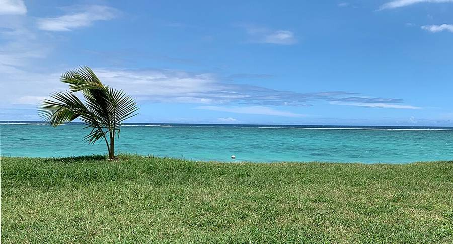
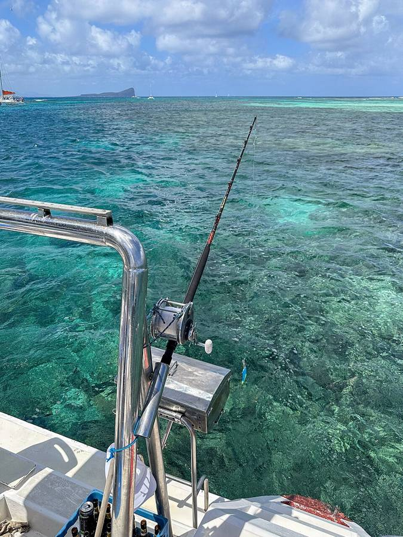

Tryk på en dag for at se, hvad vi skal.
Onsdag 4 november
Dag 1I dag
🐠 Stille start med snorkling Vi snorkler i den rolige lagune ved Flic en Flac om formiddagen. Resten af dagen er pool og tidligt i seng.
Mere info Vis mindre

Lagunen ved Flic en Flac. Foto: Benoît Prieur, CC0 Sådan ser dagen ud
Formiddag Snorkling i lagunen ved Flic en Flac
Eftermiddag Pool og tidligt i seng 🌬️ Hvis det blæser Så bliver vi ved poolen.
🎒 Husk Badetøj Badesko Maske og snorkel Solcreme
Torsdag 5 november
Dag 2I dag
🎣 Tidlig fisketur på havet Fiskerne kører hjemmefra kl. 03:30, og båden sejler fra Grand Baie kl. 05:00. Resten af dagen er rolig: frokost, lur og pool.
⏰ Afgang 03:30 🚗 1 t 15 min Mere info Vis mindre

Fiskeri ud for Mauritius. Foto: dronepicr, CC BY 2.0 Sådan ser dagen ud
Tidlig morgen Afgang hjemmefra ca. kl. 03:30. Båden sejler kl. 05:00 fra Grand Baie i nord
Eftermiddag Frokost, lur og pool. Ikke mere den dag 😴 Til dem, der bliver hjemme Sov længe. Måske bliver der frisk fisk på grillen, hvis kaptajnen lader os tage noget af fangsten med hjem.
🎒 Husk Søsygepiller Varm trøje til båden Solcreme Vand
Fredag 6 november
Dag 3I dag
🦓 Dyr og safari i Casela En nem dag på land i Casela Nature Park med safaritur og masser af dyr. Hjem ved 15-tiden og i poolen.
Mere info Vis mindre
Zebraer i Casela. Foto: 7oanna, CC BY-SA 4.0 Sådan ser dagen ud
Formiddag Casela Nature Park fra kl. 9, når de åbner
Eftermiddag Hjem ved 15-tiden og i poolen 👵 Til bedsteforældrene Safarituren foregår fra en truck, så man skal ikke gå langt.
🎟️ Billetter
Casela Special giver adgang, safaritruck, Tulawaka og så mange Pangia-ture, man vil. MUR 1.600 (ca. 220 kr.) pr. voksen og MUR 1.300 (ca. 180 kr.) pr. barn på 4–12 år.
Farm Special, hvor man også fodrer dyr, koster MUR 2.100 / 1.860 (ca. 290 / 260 kr.).
🕘 Åbent
Kl. 9–17. Aktiviteterne med dyr slutter kl. 15:30, og restauranterne lukker kl. 16.
🎒 Husk Kasket Vand Gode sko Solcreme
Lørdag 7 november
Dag 4 Ugens højdepunkt I dag
⛵ Katamaran ud til delfinerne Vi sejler i vores egen katamaran ud til delfinerne, snorkler og besøger den lille ø Île aux Bénitiers. Grill og frokost om bord.
⏱️ Ca. 6 timer 🚗 Et par minutter Mere info Vis mindre
Île aux Bénitiers. Foto: Happolati, CC BY-SA 4.0 Sådan ser dagen ud
Formiddag Privat katamaran med Océane fra L'Estuaire i Grande Rivière Noire
Eftermiddag Hjem til pool og grill 🗺️ Turen
Delfiner i Tamarin-bugten Snorkling Klippen Crystal Rock 75 minutter på Île aux Bénitiers Grill, hummer og drikkevarer om bord 🌊 Hvis havet er uroligt Så flytter vi turen til søndag eller torsdag.
⭐ Det siger andre
Turen har 5,0 på TripAdvisor. Folk roser besætningen, grillmaden og delfinerne tæt på båden. Vandet ved øen er lavt, og der kan være mange mennesker.
🎒 Husk Badetøj Badesko til øen Håndklæde Solcreme Søsygepiller
Søndag 8 november
Dag 5I dag
🏖️ Hviledag og stranden ved Le Morne En rolig dag midt i ferien. Voksne, der har lyst, går op på Le Morne-bjerget om morgenen. Om eftermiddagen strand og solnedgang.
🥾 Bjergtur kl. 7 (frivillig) 🌅 Solnedgang Mere info Vis mindre
Le Morne Brabant. Foto: dronepicr, CC BY 2.0 Sådan ser dagen ud
Formiddag Hviledag. Guidet tur op på Le Morne kl. 7 for dem, der vil
Eftermiddag Le Morne public beach og solnedgang ⛰️ Turen op på toppen
Tager 3,5–4,5 timer med guide. Det sidste stykke er stejl klatring, og børn under 13 må ikke komme med. Kun for friske voksne. Ca. MUR 2.400–4.000 (ca. 340–560 kr.).
👵 Til bedsteforældrene Stranden ved Le Morne har rolig lagune og skygge under træerne.
🎒 Husk Vandresko og 1,5 l vand (bjergturen) Badetøj Myggespray
Mandag 9 november
Dag 6I dag
🤿 Dykning og snorkling Dykkerne tager et dyk hos Sundivers i Flic en Flac, og Hugo prøver et børnedyk. Alle andre snorkler i den lave lagune lige ved siden af.
Mere info Vis mindre
Under vandet ud for Mauritius. Foto: Patrizio Napolitano, CC BY-SA 2.5 Sådan ser dagen ud
Formiddag Dykning hos Sundivers ved hotellet La Pirogue, og snorkling i lagunen
Eftermiddag Strand og pool 🤿 Hvem gør hvad
De to dykkere: genopfriskning i poolen og derefter et guidet dyk på et let revHugo (8): børnedyk i lavt vand med en instruktør. Far er med i vandetAlle andre: snorkling i den lave lagune. Arthur har redningsvest og maske på👵 Til bedsteforældrene Lagunen ved Flic en Flac er lav og rolig. Snorkeludstyr kan lejes på stranden.
🌊 Hvis havet er uroligt Så bytter vi med torsdag.
ℹ️ Godt at vide
Kom tidligt: poolen bruges kun til dykning før kl. 11 Et dyk med udstyr koster MUR 3.500 (ca. 490 kr.) Man må ikke flyve de første 24 timer efter et dyk 🎒 Husk Dykkercertifikat og logbog Badetøj Solcreme
Tirsdag 10 november
Dag 7I dag
🚙 Buggy-safari i naturreservatet To timer i buggy gennem skov og sukkerrørsmarker i Bel Ombre, med badestop ved et vandfald. Frokost i Bel Ombre og så hjem til poolen.
⏰ Start 9:30 🚗 50 min (vi kører ca. 8:30) Mere info Vis mindre
Sådan ser dagen ud
Formiddag Buggy-safari i Bel Ombre Nature Reserve kl. 9:30–11:30
Eftermiddag Frokost i Bel Ombre, så hjem til poolen 🚙 Turen
Gennem skov og sukkerrørsmarker, forbi ruinerne af en gammel sukkermølle Bad ved L'Exemple-vandfaldet Mange ser hjorte og vildsvin undervejs 2 personer pr. buggy. Føreren skal være over 18, og børn fra 5 år kører med som passagerer 👵 Til bedsteforældrene Kør med som passager, eller nyd kysten i Bel Ombre imens. Turen er ujævn og kan være mudret.
🌧️ Hvis det regner kraftigt Så bytter vi med fredag.
🎒 Husk Lukkede sko Tøj, der må blive beskidt Badetøj til vandfaldet Myggespray
Onsdag 11 november
Dag 8I dag
⛰️ Familievandretur ved Le Morne En guidet gåtur rundt om foden af Le Morne-bjerget på ca. 3 timer. Bagefter frokost og badning på stranden.
Mere info Vis mindre
Le Morne-stranden. Foto: dronepicr, CC BY 2.0 Sådan ser dagen ud
Formiddag Familievandretur med Explorers Mauritius kl. 9
Eftermiddag Frokost og badning på Le Morne-stranden 🥾 Turen
6,5 km og 300 højdemeter på ca. 3 timer. Alle aldre kan være med. Ca. MUR 3.450 (ca. 490 kr.) pr. voksen og MUR 2.650 (ca. 370 kr.) pr. barn under 7.
👵 Til bedsteforældrene Spring gerne gåturen over og vent på stranden, hvor der er skygge og rolig lagune.
🌧️ Hvis det regner Så bytter vi med torsdag.
🎒 Husk Sko med godt greb 1,5 l vand pr. person Kasket Myggespray Badetøj
Torsdag 12 november
Dag 9I dag
🏊 Pooldag ved huset Ingen planer. Pool hele dagen efter tre aktive dage, og måske solnedgang på stranden i Flic en Flac.
Mere info Vis mindre
🔄 Reservedag Er en af de andre ture blevet flyttet på grund af vejret, kommer den her.
Fredag 13 november
Dag 10I dag
🏖️ Sidste stranddag Strand og snorkling ved Le Morne om formiddagen. Om eftermiddagen pool og pakning, og grill om aftenen.
Mere info Vis mindre
Sådan ser dagen ud
Formiddag Strand og snorkling på Le Morne public beach
Eftermiddag Pool, kufferterne pakkes, og grill om aftenen 🏝️ Stranden
Den bedst anmeldte strand på vestkysten, med klart vand, hvidt sand, skygge og gratis parkering. Der er ofte skildpadder lige ud for stranden.
⚠️ Pas på de mindste Nogle steder er strømmen stærkere. Det kan blæse meget, når der er mange kitesurfere.
🎒 Husk Badetøj Maske og snorkel Pak kufferten
Lørdag 14 november
Dag 11I dag
✈️ Hjemrejse ad den smukke vej Vi tjekker ud kl. 11 og kører mod lufthavnen forbi udsigten over Black River Gorges, to vandfald og de vilde klipper på sydkysten.
⏰ Udtjek 11:00 ✈️ Lufthavn ca. 19:30 Mere info Vis mindre
🛣️ Stop på vejen
Black River Gorges-udsigten og Alexandra Falls. Gratis. Kun 3 minutters gang fra parkeringen, så alle kan være med. Lad være med at fodre aberneRochester Falls ved Souillac. 10–15 minutters gang fra parkeringen. Sig nej tak til de "parkeringsvagter", der tilbyder sigGris Gris. Vilde klipper og bølger. Her må man ikke badeMahébourg eller Blue Bay. Sen frokost og aftensmad, 15 minutter fra lufthavnenLufthavnen ca. kl. 19:30
🔒 Pas på bagagen Hold den ude af syne i bilerne, og parker, hvor der er mennesker.
🎒 Husk Pas og billetter Kontanter til parkering Myggespray